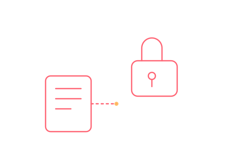

Schulung · SFD / SFD2 / UNECE
SFD, SFD2 & UNECE-Konformität
Wie Schutz Fahrzeug Diagnose (SFD) und die Weiterentwicklung SFD2 funktionieren, wie die Freischaltung zertifiziert abläuft — und was die UNECE-Regularien R155/R156 für den Werkstattbetrieb bedeuten.

SFD und SFD2 sind für viele Werkstätten zunächst eine Blackbox: eine weitere Hürde im Diagnosealltag. Diese Schulung erklärt, warum es das Konzept gibt, wie der zertifizierte Freischaltprozess konkret abläuft und wie sich SFD-/SFD2-geschützte Arbeiten sauber dokumentieren lassen — inklusive Einordnung, was das für die tägliche Arbeit mit VCDS bedeutet.
- Funktionsprinzip von SFD (Schutz Fahrzeug Diagnose) und SFD2
- Ablauf einer zertifizierten Freischaltung, typische Stolperfallen
- Dokumentationspflichten bei geschützten Steuergeräte-Eingriffen
- UNECE R155 (Cybersecurity-Management) und R156 (Software-Update-Management) verständlich erklärt
- Praxisrelevanz für Typgenehmigung, Nachrüstung und Diagnosefähigkeit
Für wen & wie
Zielgruppe
Werkstätten und Technik-Teams, die regelmäßig an SFD-/SFD2-geschützten Fahrzeugen arbeiten oder ihre Prozesse UNECE-konform aufstellen wollen.
Format & Dauer
Halbtagesformat, überwiegend theoretisch — eignet sich gut als Remote-Session, auf Wunsch auch vor Ort kombinierbar mit einer Diagnose-Schulung.
Vorkenntnisse
Grundkenntnisse in Fahrzeugdiagnose (z. B. VCDS) hilfreich, aber keine zwingende Voraussetzung.
Diese Schulung anfragen
Direkt über das Anfrageformular auf der Schulungsübersicht anfragen — „SFD/SFD2 & UNECE" als Thema auswählen.